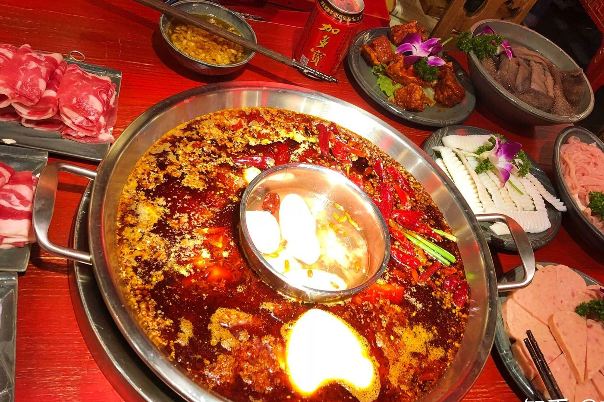
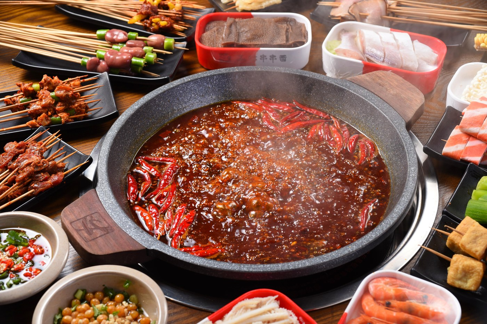
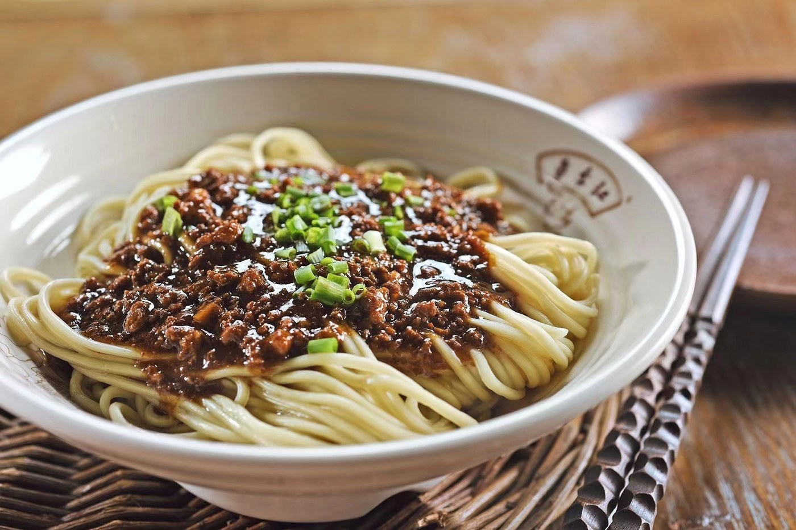
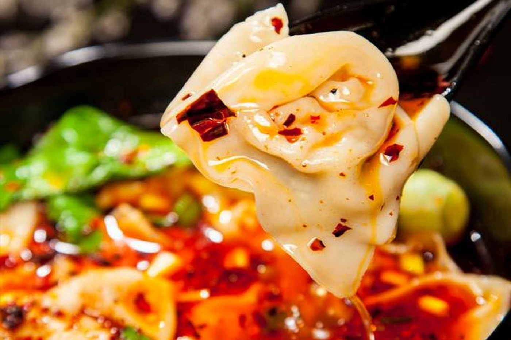
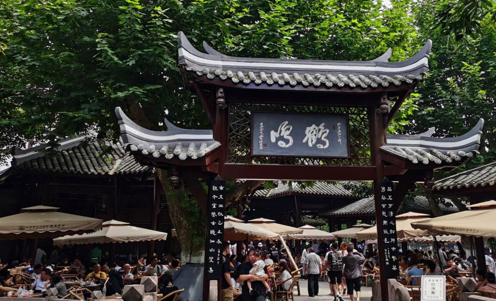

01

HOT POT · 麻辣
成都火锅
牛油与郫县豆瓣在铜锅里慢慢化开，毛肚七上八下，鸭肠一烫即起。成都人把团圆，煮进一锅红汤里。
牛油锅底
毛肚鸭肠
微辣到特辣
01 / TASTE OF CHENGDU
火锅翻滚的红油、担担面里的芝麻香、龙抄手的一口鲜——成都把“好吃”写成了一门生活哲学。
成都味道 / TASTE
川菜不止麻辣。二十四味型在成都的厨房里轮转，浓烈与清鲜各有讲究，热辣与温柔可以同桌。

HOT POT · 麻辣
牛油与郫县豆瓣在铜锅里慢慢化开，毛肚七上八下，鸭肠一烫即起。成都人把团圆，煮进一锅红汤里。

SKEWERS · 随性
竹签串起荤素，在红油里翻个身，再裹一层干碟。比火锅更随性，是街头巷尾最自在的深夜食堂。

DAN DAN NOODLES · 咸鲜
细面卧在红油与芝麻酱里，肉臊酥香，芽菜提味。拌匀的那一刻，麻辣鲜香一起涌上来。

WONTON · 鲜香
皮薄如纸，馅嫩多汁。清汤、红油、酸辣各有拥趸，一碗下肚，是成都人从小吃到大的温柔。
风味密码 / FLAVOUR CODE
麻、辣、鲜、香只是入口的第一层。真正让人惦记的，是复合味型里那一点回甘与余韵。
街头小吃 / SNACKS
不必刻意找网红店。拐进一条老街，排队最长的那家，往往就是附近居民吃了很多年的味道。
粗面裹上红糖酱油，甜辣交织，嚼劲十足。
红油微甜，蒜香收尾，一口一个刚刚好。
皮薄馅足，是老成都清晨的扎实记忆。
铜锅烘出金黄脆边，可甜可咸，现做现吃。
外脆内糯，红糖与芝麻的街头甜香。
红糖、山楂与醪糟，是火锅之后的最佳收尾。

吃辣之后 / AFTER TEA
成都人吃火锅可以很快，喝茶却一定要慢。竹椅一靠，盖碗一揭，长嘴壶划出一道弧线，刚才的麻辣就被茶香慢慢熨平了。人民公园的鹤鸣茶社，是体验这份松弛感的好去处。
走进成都茶馆文化下一站 / NEXT